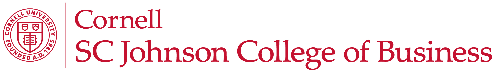
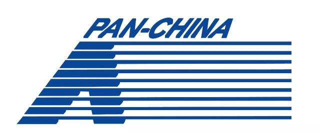
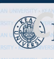
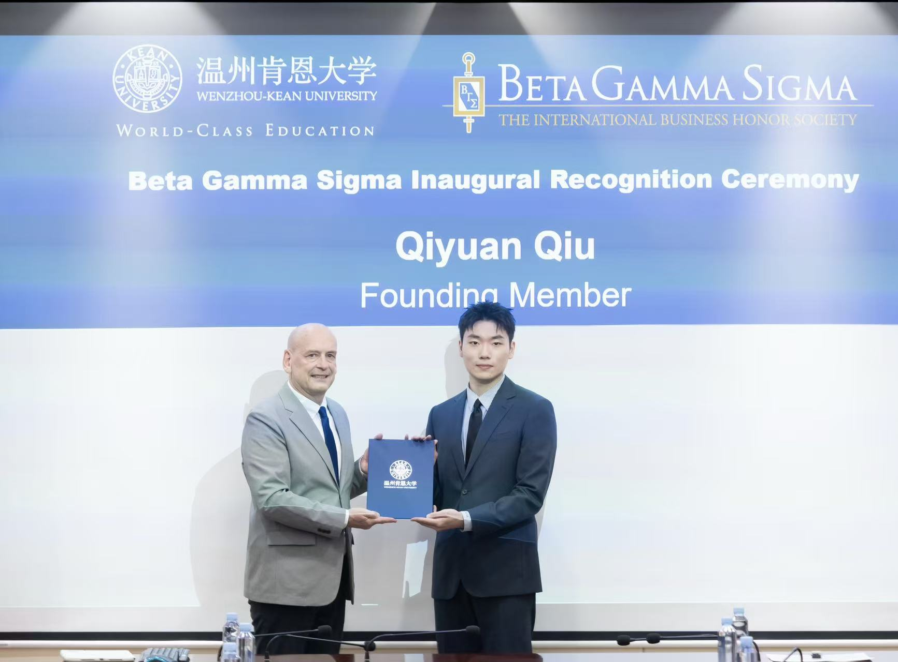
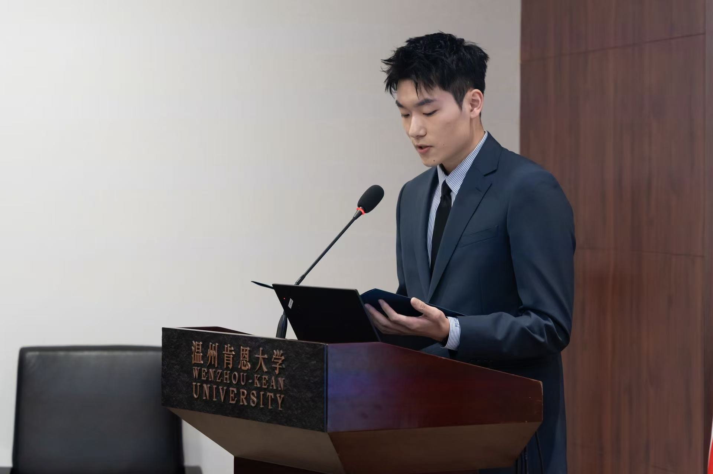
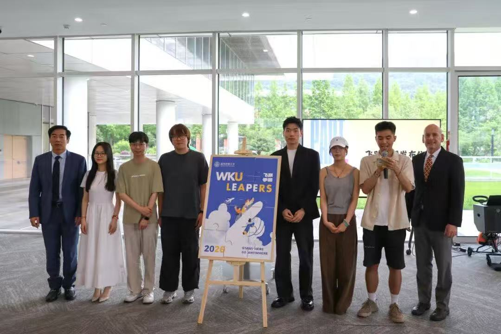
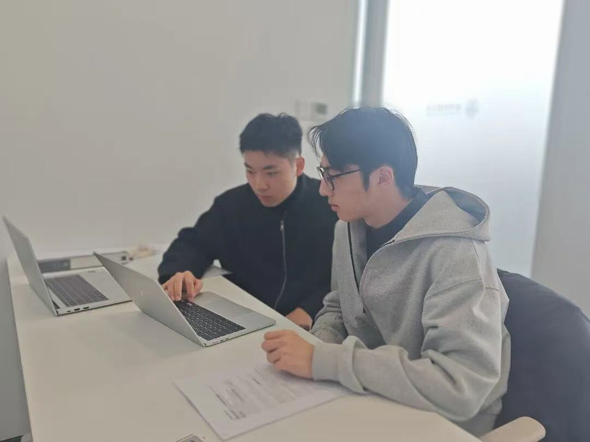
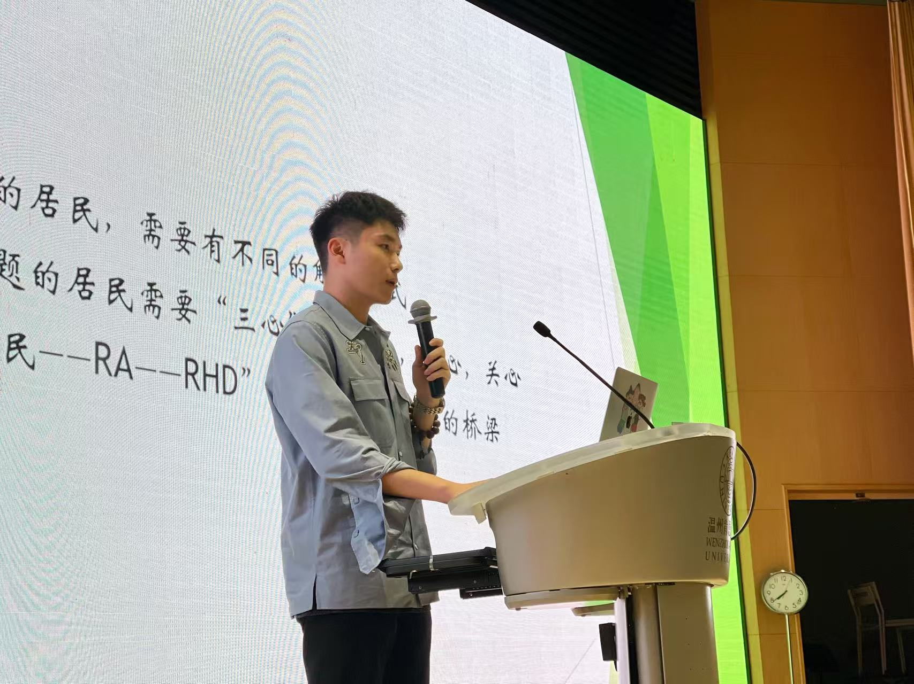

Audit & Tax
IPO audit, related-party review, inventory observation, financial-statement assurance and tax-compliance analysis.

ACCOUNTING · FINANCE · DATA ANALYTICS
I connect accounting discipline, financial judgment and empirical evidence to understand businesses and support better decisions.
PROFILE AT A GLANCE
A focused combination of academic strength and applied analysis.
01
My work sits at the intersection of financial reporting, capital markets and data-driven research.
I studied Accounting with a Finance minor at Wenzhou-Kean University and am pursuing an MPS in Management with an Accounting specialization at Cornell University. Across audit, securities and futures internships, I learned to move from source documents and market data to structured analysis, risk identification and clear communication.
I value integrity, careful judgment and constructive teamwork. I am particularly interested in audit, tax, valuation, asset management, corporate finance, business analysis and advisory roles.
CAREER FOCUS
IPO audit, related-party review, inventory observation, financial-statement assurance and tax-compliance analysis.
Three-statement modeling, FCFF/DCF, comparable companies, structured products and capital-markets research.
Evidence-led business analysis using Excel, Stata, Python and SQL, with experience in panel data and fixed-effects models.
02
Public previews are prepared for recruitment review. The working paper is still under development.
Top 5 · East China
As team captain, I analyzed the subject company's business model, industry environment and historical performance; helped build three-statement forecasts; applied FCFF/DCF and comparable-company valuation; and tested revenue, margin, WACC and terminal-growth assumptions.
Working paper · 35,338 observations
Baseline conclusion: in the fully specified model with year and industry fixed effects, the HHI coefficient is positive and significant (0.034, p < 0.05). The working evidence suggests that firms in more concentrated industries exhibit greater tax avoidance measured by book-tax differences.
03
Each placement strengthened a different layer of my analytical toolkit.
Jun – Jul 2025
Wealth Management Intern
Analyzed more than ten snowball, phoenix and other structured products; interpreted Monte Carlo simulation outputs and translated product mechanics, market scenarios and downside risks into client-facing language.
Internship verification ↗Dec 2024 – Jan 2025
Industrial Innovation Intern
Organized more than 100 commodity research reports, maintained market-tracking datasets in Excel, and supported fundamental research on prices, inventories, positions, policy and supply-demand drivers.
Internship verification ↗
Jun – Jul 2024
Audit Intern
Supported IPO-related-party checks, restructuring audit procedures, inventory counts and expense-compliance reviews. Examined more than 2,000 contracts and supporting documents while tracing relationships among source records, ledger entries and financial statements.
Public-redacted verification ↗04
Academic records linked below are unofficial public-redacted copies.
2026 – 2027
MPS in Management · Accounting Specialization
SELECTED COURSEWORK

2022 – 2026
B.S. in Accounting · Minor in Finance · GPA 3.94/4.00 · Top 5%
SELECTED COURSEWORK
LEADERSHIP & SERVICE AT WKU
Beyond coursework, I contributed through academic mentoring, residential support, knowledge sharing and student-led initiatives.


Beta Gamma Sigma
Joined the inaugural cohort of WKU's Beta Gamma Sigma chapter and was selected to deliver representative remarks at its first recognition ceremony.

WKU Leapers · 飞跃手册
Compiled and edited the WKU Leapers guide by synthesizing application strategies from more than 60 senior students into a practical publication for younger students.

Academic Support Center
Provided accounting-course support by clarifying knowledge frameworks, key concepts and problem-solving methods for students with different academic backgrounds.

Residence Life
Supported students' transition to university life, coordinated daily residential matters and was invited to share effective practices as an outstanding residential assistant.
CORE CAPABILITIES
LET'S CONNECT